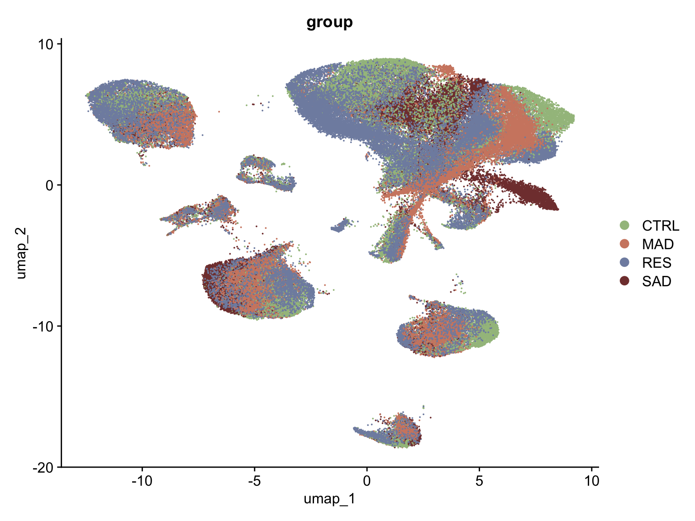
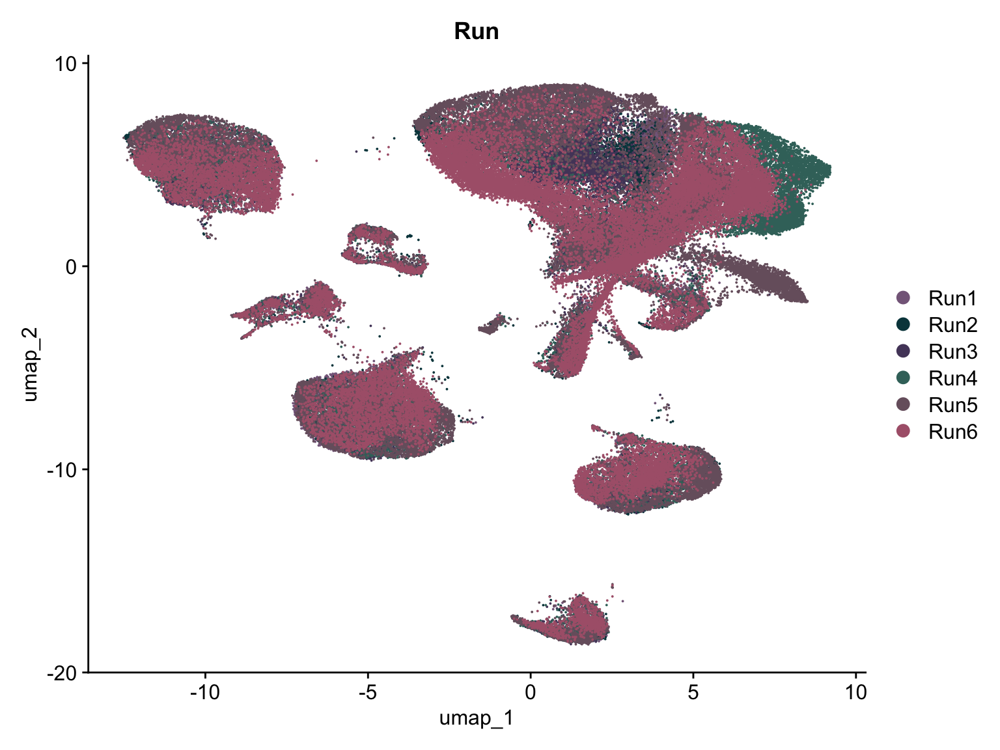
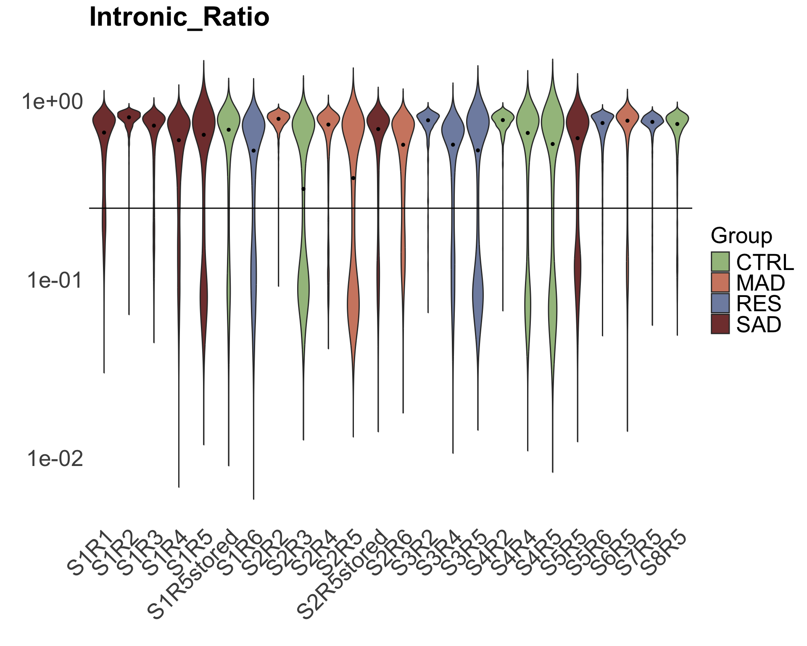
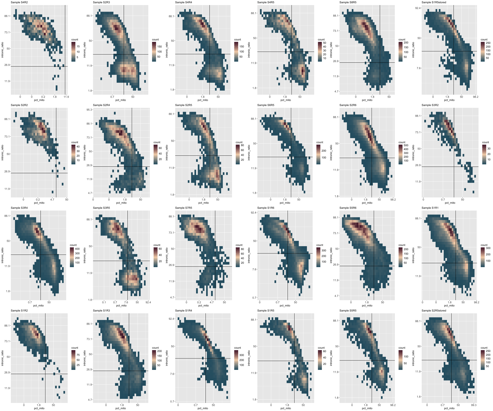
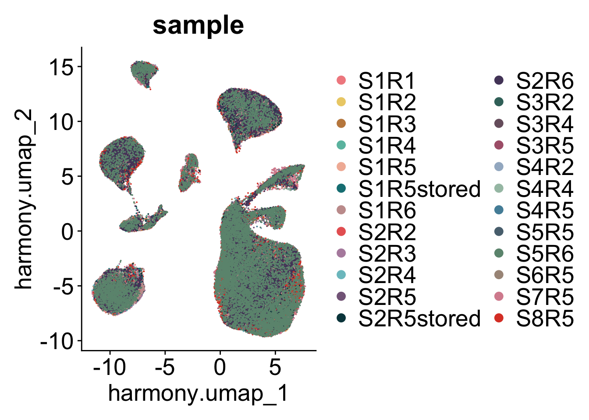
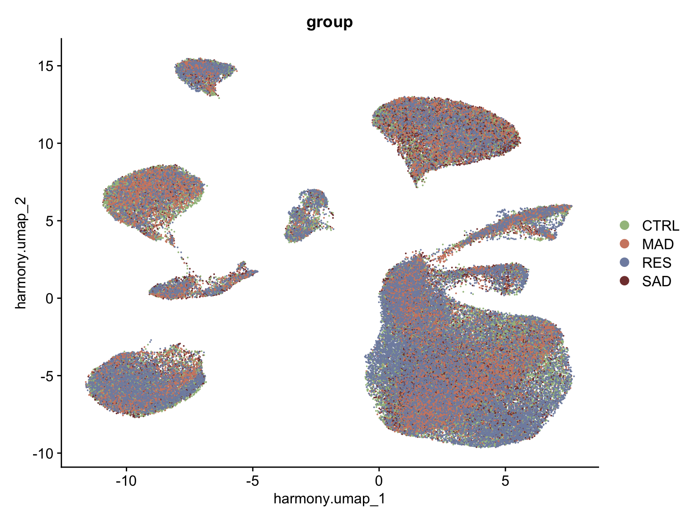

Figure1_plots
Dilara Ayyildiz
2024-07-19
Last updated: 2025-04-17
Checks: 6 1
Knit directory:
Adult_hippocampal_neurogenesis/
This reproducible R Markdown analysis was created with workflowr (version 1.7.1). The Checks tab describes the reproducibility checks that were applied when the results were created. The Past versions tab lists the development history.
The R Markdown is untracked by Git. To know which version of the R
Markdown file created these results, you’ll want to first commit it to
the Git repo. If you’re still working on the analysis, you can ignore
this warning. When you’re finished, you can run
wflow_publish to commit the R Markdown file and build the
HTML.
Great job! The global environment was empty. Objects defined in the global environment can affect the analysis in your R Markdown file in unknown ways. For reproduciblity it’s best to always run the code in an empty environment.
The command set.seed(20250417) was run prior to running
the code in the R Markdown file. Setting a seed ensures that any results
that rely on randomness, e.g. subsampling or permutations, are
reproducible.
Great job! Recording the operating system, R version, and package versions is critical for reproducibility.
Nice! There were no cached chunks for this analysis, so you can be confident that you successfully produced the results during this run.
Great job! Using relative paths to the files within your workflowr project makes it easier to run your code on other machines.
Great! You are using Git for version control. Tracking code development and connecting the code version to the results is critical for reproducibility.
The results in this page were generated with repository version 8be8d07. See the Past versions tab to see a history of the changes made to the R Markdown and HTML files.
Note that you need to be careful to ensure that all relevant files for
the analysis have been committed to Git prior to generating the results
(you can use wflow_publish or
wflow_git_commit). workflowr only checks the R Markdown
file, but you know if there are other scripts or data files that it
depends on. Below is the status of the Git repository when the results
were generated:
Ignored files:
Ignored: .DS_Store
Ignored: .Rhistory
Ignored: .Rproj.user/
Ignored: analysis/.DS_Store
Ignored: analysis/figure/
Ignored: data/.DS_Store
Ignored: data/CellPhone_sigInteractions.txt
Ignored: data/Donor_info_heatmap.xlsx
Ignored: data/Fig4D_Adult_CTR_ImNs_vs_Fetal_ImNB_rldmatrix.txt
Ignored: data/Fig4E_ImNs_vs_MatNs_vsdmatrix.txt
Ignored: data/Group_matrices/
Ignored: data/RNAscope_combo3.txt
Ignored: data/Summary_spheroids_D0-D16-D30-D50-D75_qPCR-calculations.xlsx
Ignored: data/adult_QC_thresholds.txt
Ignored: data/adult_filtered.RDS
Ignored: data/adult_metadata_info.txt
Ignored: data/adult_raw.RDS
Ignored: data/adultgc_emptydroplets_integrated.RDS
Ignored: data/adultgc_fetalNeurolin_int.RDS
Ignored: data/adultgc_fetalNeurolin_int_subset.RDS
Ignored: data/adultgc_filtered.RDS
Ignored: data/fetal_QC_thresholds.txt
Ignored: data/fetal_filtered.RDS
Ignored: data/fetal_raw.RDS
Ignored: data/libd_stemcell_timecourse_rseGene_n157.rda
Ignored: data/marker_genesets.xlsx
Ignored: data/neurolin.RDS
Ignored: data/neurolin_sce.RDS
Ignored: data/neurolin_sce_fitgam.RDS
Ignored: data/overlaping_interactions_CellPhone_CellChat.txt
Ignored: data/rlog_corrected_ImNs_SAD_vs_RES.RDS
Ignored: data/tradeseq_neurolin_heatmapdata.txt
Ignored: output/.DS_Store
Ignored: output/Figures/
Ignored: output/SupFigures/
Ignored: output/SupTables/
Untracked files:
Untracked: analysis/Fig1_script.Rmd
Untracked: analysis/Functions.R
Unstaged changes:
Modified: .gitignore
Modified: analysis/index.Rmd
Note that any generated files, e.g. HTML, png, CSS, etc., are not included in this status report because it is ok for generated content to have uncommitted changes.
There are no past versions. Publish this analysis with
wflow_publish() to start tracking its development.
QC processing
# read raw file
library(here)here() starts at /Users/dilaraayyildiz/saltalab_github_repos/Adult_hippocampal_neurogenesissource(here("analysis", "Functions.R"))Warning: package 'ggplot2' was built under R version 4.3.2Warning: package 'cli' was built under R version 4.3.3Warning: package 'clusterProfiler' was built under R version 4.3.3Warning: package 'S4Vectors' was built under R version 4.3.2Warning: package 'GenomeInfoDb' was built under R version 4.3.2Warning: package 'dunn.test' was built under R version 4.3.2Warning: package 'edgeR' was built under R version 4.3.2Warning: package 'Rcpp' was built under R version 4.3.3Warning: package 'AnnotationDbi' was built under R version 4.3.2Warning: package 'UCell' was built under R version 4.3.2Warning in RNGkind("Mersenne-Twister", "Inversion", "Rounding"): non-uniform
'Rounding' sampler usedadult<-readRDS(here("data","adult_filtered.RDS"))Supp Fig1A - pre integration
# tiff(here("output", "SupFigures","SupFig1A_1.tiff"), units="in", width=8, height=6, res=300)
DimPlot(adult, reduction = "umap.unintegrated", group.by = "group", label = F, cols = CFG$groupspal, pt.size = 0.01, raster=FALSE) + xlab("umap_1") + ylab("umap_2")+theme(axis.text.x=element_text(size=20),axis.text.y=element_text(size=20), axis.title.x = element_text(size=20), axis.title.y = element_text(size=20), legend.text = element_text(size=20), title = element_text(size=20))
# dev.off()
# tiff(here("output", "SupFigures","SupFig1A_2.tiff"), units="in", width=8, height=6, res=300)
DimPlot(adult, reduction = "umap.unintegrated", group.by = "Run", label = F, cols = CFG$mypal[11:16], pt.size = 0.01, raster=FALSE) + xlab("umap_1") + ylab("umap_2")+theme(axis.text.x=element_text(size=20),axis.text.y=element_text(size=20), axis.title.x = element_text(size=20), axis.title.y = element_text(size=20), legend.text = element_text(size=20), title = element_text(size=20))# dev.off()
# tiff(here("output", "SupFigures","SupFig1A_3.tiff"), units="in", width=8, height=6, res=300)
DimPlot(adult, reduction = "umap.unintegrated", group.by = "sample", label = F, cols = CFG$mypal, pt.size = 0.01, raster=FALSE) + xlab("umap_1") + ylab("umap_2")+theme(axis.text.x=element_text(size=20),axis.text.y=element_text(size=20), axis.title.x = element_text(size=20), axis.title.y = element_text(size=20), legend.text = element_text(size=20), title = element_text(size=20))# dev.off()Supp Fig1B
adult_raw<-readRDS(here("data","adult_raw.RDS"))
qc_thresholds <- read.table(here("data","adult_QC_thresholds.txt"), header = T, sep='\t')
samples<-unique(adult_raw$sample)
feature_plots <- map(samples, function(sample_id) {
print(paste("Processing sample:", sample_id))
sObj <- subset(adult_raw, subset = sample == sample_id)
fun_nFeatureRNA_plot(sObj, sample_id, qc_thresholds)
})[1] "Processing sample: S1R1"
[1] "Processing sample: S1R2"
[1] "Processing sample: S2R2"
[1] "Processing sample: S3R2"
[1] "Processing sample: S4R2"
[1] "Processing sample: S2R3"
[1] "Processing sample: S1R3"
[1] "Processing sample: S1R4"
[1] "Processing sample: S2R4"
[1] "Processing sample: S3R4"
[1] "Processing sample: S4R4"
[1] "Processing sample: S1R5"
[1] "Processing sample: S2R5"
[1] "Processing sample: S3R5"
[1] "Processing sample: S4R5"
[1] "Processing sample: S5R5"
[1] "Processing sample: S6R5"
[1] "Processing sample: S7R5"
[1] "Processing sample: S8R5"
[1] "Processing sample: S1R5stored"
[1] "Processing sample: S2R5stored"
[1] "Processing sample: S1R6"
[1] "Processing sample: S2R6"
[1] "Processing sample: S5R6"# pdf(here("output", "SupFigures","SupFig1B_1.pdf"), width=20, height=16)
do.call(grid.arrange, c(feature_plots, nrow = 4, ncol = 6))
# dev.off()
metadata <- adult_raw@meta.data
# pdf(here("output", "SupFigures","SupFig1B_2.pdf"), width=14, height=8)
metadata$percent_ribo[is.nan(metadata$percent_ribo)] <- 0 # Replace NaN with 0
metadata$percent_ribo[is.na(metadata$percent_ribo)] <- 0 # Replace NA with 0
metadata$percent_ribo[metadata$percent_ribo == 0] <- 0.1 # avoid inf values
medians <- metadata %>%
group_by(sample) %>%
summarize(median_ribo = median(percent_ribo), .groups = "drop")
ggplot(metadata, aes(x = sample, y = percent_ribo, fill = group)) +
geom_violin(scale = "width", trim = F) +
geom_point(data = medians, aes(x = sample, y = median_ribo),
color = "black", size = 1, shape = 21, fill = "black") + # Median dots
scale_y_log10(labels = label_scientific()) +
scale_fill_manual(values = CFG$groupspal) +
theme_minimal() +
theme(axis.text.x = element_text(angle = 45, hjust = 1, size=20), axis.text.y = element_text(size=20),
legend.text = element_text(size = 20), legend.title = element_text(size=20),
plot.title = element_text(size = 24, face = "bold"),
panel.border = element_blank(), panel.grid.major = element_blank(),panel.grid.minor = element_blank()) +
labs(title = "pct_ribo", x = "", y = "", fill = "Group")# dev.off()
# pdf(here("output", "SupFigures","SupFig1B_3.pdf"), width=14, height=8)
metadata$velocyto_unsplicedratio[metadata$velocyto_unsplicedratio == 0] <- 0.1 # avoid inf values
medians <- metadata %>%
group_by(sample) %>%
summarize(median_velo = median(velocyto_unsplicedratio), .groups = "drop")
ggplot(metadata, aes(x = sample, y = velocyto_unsplicedratio, fill = group)) +
geom_violin(scale = "width", trim = F) +
geom_point(data = medians, aes(x = sample, y = median_velo),
color = "black", size = 1, shape = 21, fill = "black") + # Median dots
scale_y_log10(labels = label_scientific()) +
scale_fill_manual(values = CFG$groupspal) +
geom_hline(yintercept = 0.25) +
theme_minimal() +
theme(axis.text.x = element_text(angle = 45, hjust = 1, size=20), axis.text.y = element_text(size=20),
legend.text = element_text(size = 20), legend.title = element_text(size=20),
plot.title = element_text(size = 24, face = "bold"),
panel.border = element_blank(), panel.grid.major = element_blank(),panel.grid.minor = element_blank()) +
labs(title = "Intronic_Ratio", x = "", y = "", fill = "Group")
# dev.off()Supp Fig1C
qc_thresholds <- read.table(here("data","adult_QC_thresholds.txt"), header = T, sep='\t')
samples<-unique(adult_raw$sample)
samples <- samples[order(factor(adult_raw$group[match(samples, adult_raw$sample)], levels = c("CTRL", "MAD", "RES", "SAD")))]
# Apply functions to each sample
mito_vs_velo_plots <- map(samples, function(sample_id) {
print(paste("Processing sample:", sample_id))
sObj <- subset(adult_raw, subset = sample == sample_id)
fun_mito_velo_plot(sObj, sample_id)
})[1] "Processing sample: S4R2"
[1] "Processing sample: S2R3"
[1] "Processing sample: S4R4"
[1] "Processing sample: S4R5"
[1] "Processing sample: S8R5"
[1] "Processing sample: S1R5stored"
[1] "Processing sample: S2R2"
[1] "Processing sample: S2R4"
[1] "Processing sample: S2R5"
[1] "Processing sample: S6R5"
[1] "Processing sample: S2R6"
[1] "Processing sample: S3R2"
[1] "Processing sample: S3R4"
[1] "Processing sample: S3R5"
[1] "Processing sample: S7R5"
[1] "Processing sample: S1R6"
[1] "Processing sample: S5R6"
[1] "Processing sample: S1R1"
[1] "Processing sample: S1R2"
[1] "Processing sample: S1R3"
[1] "Processing sample: S1R4"
[1] "Processing sample: S1R5"
[1] "Processing sample: S5R5"
[1] "Processing sample: S2R5stored"# tiff(here("output", "SupFigures","SupFig1C_1.tiff"), width=24, height=12, units="in", res=300)
do.call(grid.arrange, c(mito_vs_velo_plots, nrow = 4, ncol = 6))Warning: Removed 76 rows containing non-finite outside the scale range
(`stat_bin2d()`).Warning: Removed 37 rows containing non-finite outside the scale range
(`stat_bin2d()`).Warning: Removed 139 rows containing non-finite outside the scale range
(`stat_bin2d()`).Warning: Removed 45 rows containing non-finite outside the scale range
(`stat_bin2d()`).Warning: Removed 693 rows containing non-finite outside the scale range
(`stat_bin2d()`).Warning: Removed 156 rows containing non-finite outside the scale range
(`stat_bin2d()`).Warning: Removed 32 rows containing non-finite outside the scale range
(`stat_bin2d()`).Warning: Removed 633 rows containing non-finite outside the scale range
(`stat_bin2d()`).Warning: Removed 46 rows containing non-finite outside the scale range
(`stat_bin2d()`).Warning: Removed 27 rows containing non-finite outside the scale range
(`stat_bin2d()`).Warning: Removed 199 rows containing non-finite outside the scale range
(`stat_bin2d()`).Warning: Removed 3 rows containing non-finite outside the scale range
(`stat_bin2d()`).Warning: Removed 162 rows containing non-finite outside the scale range
(`stat_bin2d()`).Warning: Removed 19 rows containing non-finite outside the scale range
(`stat_bin2d()`).Warning: Removed 1927 rows containing non-finite outside the scale range
(`stat_bin2d()`).Warning: Removed 385 rows containing non-finite outside the scale range
(`stat_bin2d()`).Warning: Removed 2428 rows containing non-finite outside the scale range
(`stat_bin2d()`).Warning: Removed 632 rows containing non-finite outside the scale range
(`stat_bin2d()`).Warning: Removed 21 rows containing non-finite outside the scale range
(`stat_bin2d()`).Warning: Removed 192 rows containing non-finite outside the scale range
(`stat_bin2d()`).Warning: Removed 33 rows containing non-finite outside the scale range
(`stat_bin2d()`).Warning: Removed 25 rows containing non-finite outside the scale range
(`stat_bin2d()`).Warning: Removed 44 rows containing non-finite outside the scale range
(`stat_bin2d()`).Warning: Removed 84 rows containing non-finite outside the scale range
(`stat_bin2d()`).# dev.off()
rm(adult_raw)
gc(full=T) used (Mb) gc trigger (Mb) limit (Mb) max used (Mb)
Ncells 16452121 878.7 24413765 1303.9 NA 24413765 1303.9
Vcells 6263621347 47787.7 10241636446 78137.5 122880 7731082776 58983.5Raw Data Filtering & Clustering
# adult_filtered <- QC_filtering(adult_raw, qc_thresholds)
#
# adult_filtered <- NormalizeData(object = adult_filtered)
# adult_filtered <- FindVariableFeatures(adult_filtered)
# adult_filtered <- ScaleData(adult_filtered)
# adult_filtered <- RunPCA(adult_filtered)
#
# ElbowPlot(adult_filtered)
#
# adult_filtered <- FindNeighbors(adult_filtered, dims = 1:20)
# adult_filtered <- FindClusters(adult_filtered, resolution = 1.4)
# adult_filtered <- RunUMAP(adult_filtered, dims = 1:20, reduction = "pca", reduction.name = "umap.unintegrated")
#
# adult_filtered <- RunHarmony(adult_filtered, c("sample","Run"), plot_convergence = TRUE, kmeans_init_nstart=20, kmeans_init_iter_max=150)
# adult_filtered <- RunUMAP(adult_filtered, reduction = "harmony", dims = 1:20, reduction.name='harmony.umap') %>%
# FindNeighbors(reduction = "harmony", dims = 1:20) %>%
# FindClusters(resolution = 1.4) %>%
# identity()
# saveRDS(adult_filtered, file=here("data", "adult_filtered.RDS"))# read filtered file
# adult<-readRDS(here("data", "adult_filtered.RDS"))
adult<-SetIdent(adult, value="broad_cell_type")SuppFig 1A - post integration
# tiff(here("output", "SupFigures","SupFig1A_3.tiff"), units="in", width=8, height=6, res=300)
DimPlot(adult, reduction = "harmony.umap", group.by = "group", label = F, cols = CFG$groupspal, pt.size = 0.01, raster=FALSE) + xlab("harmony.umap_1") + ylab("harmony.umap_2")+theme(axis.text.x=element_text(size=20),axis.text.y=element_text(size=20), axis.title.x = element_text(size=20), axis.title.y = element_text(size=20), legend.text = element_text(size=20), title = element_text(size=20))
# dev.off()
# tiff(here("output", "SupFigures","SupFig1A_4.tiff"), units="in", width=8, height=6, res=300)
DimPlot(adult, reduction = "harmony.umap", group.by = "Run", label = F, cols = CFG$mypal[11:16], pt.size = 0.01, raster=FALSE) + xlab("harmony.umap_1") + ylab("harmony.umap_2")+theme(axis.text.x=element_text(size=20),axis.text.y=element_text(size=20), axis.title.x = element_text(size=20), axis.title.y = element_text(size=20), legend.text = element_text(size=20), title = element_text(size=20))# dev.off()
# tiff(here("output", "SupFigures","SupFig1A_5.tiff"), units="in", width=8, height=6, res=300)
DimPlot(adult, reduction = "harmony.umap", group.by = "sample", label = F, cols = CFG$mypal, pt.size = 0.01, raster=FALSE) + xlab("harmony.umap_1") + ylab("harmony.umap_2")+theme(axis.text.x=element_text(size=20),axis.text.y=element_text(size=20), axis.title.x = element_text(size=20), axis.title.y = element_text(size=20), legend.text = element_text(size=20), title = element_text(size=20))
# dev.off()Fig 1A - Prepared manually
Fig 1B
Donor_info_heatmap <- as.data.frame(read_excel(here("data", "Donor_info_heatmap.xlsx")))
# === PREPARE DATA ===
## Define character columns
chr_cols <- c("Sample_name", "Group", "Sex", "APOE")
## Extract numeric columns and convert to numeric
data_numeric <- Donor_info_heatmap %>% dplyr::select(-all_of(chr_cols)) %>% mutate(across(everything(), as.numeric))Warning: There were 5 warnings in `mutate()`.
The first warning was:
ℹ In argument: `across(everything(), as.numeric)`.
Caused by warning:
! NAs introduced by coercion
ℹ Run `dplyr::last_dplyr_warnings()` to see the 4 remaining warnings.## Combine numeric and character columns
data <- Donor_info_heatmap %>% dplyr::select(all_of(chr_cols)) %>% bind_cols(data_numeric)
# === DEFINE COLORS ===
## Color gradients for numeric columns
numeric_columns <- names(data_numeric)
color_gradients <- lapply(numeric_columns, function(col_name) {
min_val <- min(na.omit(data_numeric[[col_name]]))
max_val <- max(na.omit(data_numeric[[col_name]]))
circlize::colorRamp2(
breaks = c(min_val, max_val),
colors = c("lightgrey", "#542437")
)
})
names(color_gradients) <- numeric_columns
## Categorical colors
categorical_cols <- list(
Group = c("Control" = "#A3BF8C", "Moderate_AD" = "#D08770", "Resilient"= "#808EAF", "Severe_AD"= "#813E3C"),
Sex = c("F"="#A5C2B2", "M"= "#6C947F"),
APOE = c("33"="#A3B6CB", "43"="#548FA7", "44"="#59707E", "NA"= "ivory2")
)
## Merge colors
heatmap_colors <- c(color_gradients, categorical_cols)
# === CREATE HEATMAP ===
## Annotation
ha <- HeatmapAnnotation(df=data %>% dplyr::select(-Sample_name), col = heatmap_colors, na_col = "ivory2")
## Dummy matrix for heatmap
dummy_matrix <- matrix(1, nrow = 0, ncol = 24)
## Heatmap object
heatmap <- Heatmap(dummy_matrix,
name = "Clinical Data",
top_annotation = ha,
cluster_columns = FALSE,
cluster_rows = FALSE,
show_column_names = TRUE,
show_row_names = TRUE,
na_col = "ivory2", # Color for NA values
heatmap_legend_param = list(
title = "Heatmap Legend",
legend_direction = "horizontal"
))
# === EXPORT HEATMAP ===
# pdf(here("output", "Figures", "Figure1B.pdf"), height = 8, width = 10)
draw(heatmap, annotation_legend_side = "bottom")# dev.off()Fig 1C
# === UPPER PANEL UMAP ===
# tiff(here("output", "Figures","Figure1C_1.tiff"), units="in", width=8, height=6, res=300)
DimPlot(adult, reduction = "harmony.umap", group.by = "broad_cell_type", label = F, cols = c("#F28C8F", "#ECCF76", "#6ABEAE", "#C3894C", "#147F84", "#C69D9C", "#E86562", "#B48DAC", "#F2B8A5"), pt.size = 0.5, raster=FALSE) + xlab("harmony.umap_1") + ylab("harmony.umap_2")# dev.off()
# === CREATE THE FEATUREPLOTS ===
features <- c("AQP4", "CLDN5", "CFAP299", "PROX1", "RBFOX3", "GAD2", "PTPRC", "MOG", "PDGFRA", "DCN")
plots <- lapply(features, create_feature_plot, data = adult, gradient_colors = CFG$gradient_white, label=F, raster = F, order=T)Scale for colour is already present.
Adding another scale for colour, which will replace the existing scale.
Scale for colour is already present.
Adding another scale for colour, which will replace the existing scale.
Scale for colour is already present.
Adding another scale for colour, which will replace the existing scale.
Scale for colour is already present.
Adding another scale for colour, which will replace the existing scale.
Scale for colour is already present.
Adding another scale for colour, which will replace the existing scale.
Scale for colour is already present.
Adding another scale for colour, which will replace the existing scale.
Scale for colour is already present.
Adding another scale for colour, which will replace the existing scale.
Scale for colour is already present.
Adding another scale for colour, which will replace the existing scale.
Scale for colour is already present.
Adding another scale for colour, which will replace the existing scale.
Scale for colour is already present.
Adding another scale for colour, which will replace the existing scale.# tiff(here("output", "Figures", "Figure1C_2.tiff"), units = "in", width = 40, height = 12, res = 300)
ggarrange(plotlist = plots, ncol = 5, nrow = 2)# dev.off()Fig 1D
genes<- c("RBFOX3", "SLC17A7", "CFAP299", "SV2B", "PROX1", "SEMA5A", "COL25A1", "GAD2", "GAD1", "PDGFRA", "NEU4", "OLIG1", "MOG", "MAG", "MOBP", "PTPRC", "ITGAM", "CSF1R", "AQP4", "GJA1", "ALDOC", "S100B", "CLDN5", "CD34", "VWF", "DCN", "COL1A2")
myLevels<-c("ExN_MC/CA", "ExN_GC", "InN", "OPC", "Oligodendrocyte", "Microglia", "Astrocyte", "Endothelia", "VLMC")
Idents(adult) <- factor(Idents(adult), levels= rev(myLevels))
# pdf(here("output", "Figures", "Figure1D.pdf"), width=12, height=6)
DotPlot(adult, features = genes, cols=CFG$gradient_white) +theme(axis.text.x = element_text(angle = 90, vjust = 0.5, hjust=1, size=18), axis.text.y = element_text(size=18), legend.text = element_text(size = 18))
# dev.off()Fig 1E
# === UMAP SPLIT BY GROUP ===
colors<-c("#F28C8F", "#ECCF76", "#6ABEAE", "#C3894C", "#147F84", "#C69D9C", "#E86562", "#B48DAC", "#F2B8A5")
# tiff(here("output", "Figures","Figure1E_1.tiff"), units="in",width=24, height=6, res=300)
DimPlot(adult, reduction = "harmony.umap", split.by = "group", group.by = "broad_cell_type", label = F, cols = colors, pt.size = 0.5, raster=FALSE) + xlab("harmony.umap_1") + ylab("harmony.umap_2")# dev.off()
# === PROPELLER BAR PLOT ===
output.logit <- propeller(clusters=adult$broad_cell_type, sample=adult$sample, group=adult$group, transform="logit")Performing logit transformation of proportionsgroup variable has > 2 levels, ANOVA will be performedprops <- getTransformedProps(clusters=adult$broad_cell_type, sample=adult$group, transform="logit")Performing logit transformation of proportionsprops_df<-as.data.frame(props$Proportions)
# pdf(here("output", "Figures","Figure1E_2.pdf"), width=8, height=6)
ggplot(props_df, aes(fill=clusters, y=Freq, x=sample)) + scale_fill_manual(values=colors) + geom_bar(position="stack", stat="identity") + theme_bw() + theme(panel.border = element_blank(), panel.grid.major = element_blank(),panel.grid.minor = element_blank(), axis.text.x = element_text(size=14), axis.text.y = element_text(size=14), legend.text = element_text(size = 14), legend.title = element_text(size = 14))# dev.off()SupFig 1D
data <- data.frame(
Study = c("Yao", "Habib", "Ayhan", "Franjic", "Zhou", "This Study"),
GC_Percentage = c(19, 10, 7, 23, 23, 53),
Non_GC_Percentage = 100 - c(19, 10, 7, 23, 23, 53)
)
data_long <- melt(data, id.vars = "Study",
variable.name = "Cell_Type",
value.name = "Percentage")Warning in melt(data, id.vars = "Study", variable.name = "Cell_Type",
value.name = "Percentage"): The melt generic in data.table has been passed a
data.frame and will attempt to redirect to the relevant reshape2 method; please
note that reshape2 is deprecated, and this redirection is now deprecated as
well. To continue using melt methods from reshape2 while both libraries are
attached, e.g. melt.list, you can prepend the namespace like
reshape2::melt(data). In the next version, this warning will become an error.# Sort the Study factor levels based on GC_Percentage
data_long$Study <- factor(data_long$Study, levels = data$Study[order(data$GC_Percentage)])
# Reorder the levels of Cell_Type to ensure GC_Percentage is stacked first
data_long$Cell_Type <- factor(data_long$Cell_Type, levels = c("Non_GC_Percentage", "GC_Percentage"))
# tiff(here("output", "SupFigures", "SupFig1D.tiff"), width = 5, height = 10, units = "in", res = 300)
ggplot(data_long, aes(x = Study, y = Percentage, fill = Cell_Type)) +
geom_bar(stat = "identity", width = 0.7) +
scale_fill_manual(values = c("GC_Percentage" = "#A3B6CB", "Non_GC_Percentage" = "lightgrey")) +
labs(title = "Percentage of Granule Cells in Various Studies",
x = "Study",
y = "Percentage of Cells",
fill = "Cell Type") +
theme_minimal() +
theme(axis.text.x = element_text(angle = 45, hjust = 1),
panel.grid = element_blank()) 
# dev.off()SupTable1.1
# Table with number of cells per cell type in donors and groups
# table<-as.data.frame(table(adult@meta.data$broad_cell_type, adult@meta.data$sample))
#
# data_table <- table %>%
# pivot_wider(names_from = Var2, values_from = Freq) %>%
# column_to_rownames(var = "Var1")
#
# head(table)
# write.table(data_table, here("output", "SupTables","SupTable1_1.txt"), quote = F, sep="\t", row.names = T)SupTable1.2
# Convert Seurat object to pseudo-bulk counts
# pb <- edgeR::Seurat2PB(adult, sample = "sample", cluster = "broad_cell_type")
# counts <- pb$counts
#
# # Prepare metadata
# metadata <- data.frame(cluster = gsub("cluster", "", unlist(str_split_fixed(colnames(pb), "_", 2))[, 2]))
# rownames(metadata) <- colnames(pb)
#
# # Apply deseq2 function to each cluster
# clusters <- unique(adult$broad_cell_type)
# DE_results <- fun_deseq2_cellType(counts, metadata,
# smallestGroupSize = 20,
# use_vst = TRUE,
# padj_threshold = 0.05,
# log2FC_threshold = 0.5,
# minExpression = 10)
#
# # Combine all results
# DE_result_list <- bind_rows(DE_result_list)
#
# head(DE_result_list)
# write.table(DE_result_list, here("output", "SupTables","SupTable1_2.txt"), sep="\t", quote = F, row.names = F)
sessionInfo()R version 4.3.1 (2023-06-16)
Platform: x86_64-apple-darwin20 (64-bit)
Running under: macOS Ventura 13.6.1
Matrix products: default
BLAS: /Library/Frameworks/R.framework/Versions/4.3-x86_64/Resources/lib/libRblas.0.dylib
LAPACK: /Library/Frameworks/R.framework/Versions/4.3-x86_64/Resources/lib/libRlapack.dylib; LAPACK version 3.11.0
Random number generation:
RNG: Mersenne-Twister
Normal: Inversion
Sample: Rounding
locale:
[1] en_US.UTF-8/en_US.UTF-8/en_US.UTF-8/C/en_US.UTF-8/en_US.UTF-8
time zone: Europe/Amsterdam
tzcode source: internal
attached base packages:
[1] stats4 grid stats graphics grDevices utils datasets
[8] methods base
other attached packages:
[1] viridis_0.6.4 viridisLite_0.4.2
[3] UCell_2.6.2 tradeSeq_1.16.0
[5] lubridate_1.9.3 forcats_1.0.0
[7] readr_2.1.5 tidyverse_2.0.0
[9] yardstick_1.2.0 workflowsets_1.0.1
[11] workflows_1.1.3 tune_1.1.2
[13] tidyr_1.3.0 rsample_1.2.0
[15] recipes_1.0.8 parsnip_1.1.1
[17] modeldata_1.2.0 infer_1.0.5
[19] dials_1.2.0 scales_1.3.0
[21] broom_1.0.5 tidymodels_1.1.1
[23] tibble_3.2.1 stringr_1.5.1
[25] speckle_1.2.0 slingshot_2.10.0
[27] TrajectoryUtils_1.10.0 princurve_2.1.6
[29] SCP_0.5.6 scDblFinder_1.16.0
[31] scCustomize_1.1.3 SeuratObject_5.0.1
[33] Seurat_4.4.0 readxl_1.4.3
[35] RColorBrewer_1.1-3 purrr_1.0.2
[37] pheatmap_1.0.12 org.Hs.eg.db_3.18.0
[39] AnnotationDbi_1.64.1 Nebulosa_1.12.0
[41] patchwork_1.3.0.9000 nebula_1.5.2
[43] monocle3_1.3.4 Matrix.utils_0.9.7
[45] Matrix_1.6-4 magrittr_2.0.3
[47] ktplots_2.3.0 harmony_1.1.0
[49] Rcpp_1.0.14 gridExtra_2.3
[51] ggsignif_0.6.4 ggpubr_0.6.0
[53] ggnewscale_0.4.9 ggbeeswarm_0.7.2
[55] enrichplot_1.22.0 EnhancedVolcano_1.20.0
[57] ggrepel_0.9.4 edgeR_4.0.2
[59] limma_3.58.1 easyGgplot2_1.0.0.9000
[61] dunn.test_1.3.6 DropletUtils_1.22.0
[63] SingleCellExperiment_1.24.0 DESeq2_1.42.0
[65] SummarizedExperiment_1.32.0 MatrixGenerics_1.14.0
[67] matrixStats_1.1.0 GenomicRanges_1.54.1
[69] GenomeInfoDb_1.38.1 IRanges_2.36.0
[71] S4Vectors_0.40.2 data.table_1.14.8
[73] cowplot_1.1.1 ComplexHeatmap_2.21.2
[75] clusterProfiler_4.10.1 cli_3.6.4
[77] CellChat_2.1.2 Biobase_2.62.0
[79] BiocGenerics_0.48.1 ggplot2_3.5.1
[81] igraph_1.5.1 dplyr_1.1.4
[83] biomaRt_2.58.0 BiocParallel_1.36.0
[85] here_1.0.1 workflowr_1.7.1
loaded via a namespace (and not attached):
[1] ica_1.0-3 plotly_4.10.4
[3] scater_1.30.0 rematch2_2.1.2
[5] devtools_2.4.5 zlibbioc_1.48.0
[7] GPfit_1.0-8 tidyselect_1.2.0
[9] bit_4.0.5 doParallel_1.0.17
[11] clue_0.3-65 lattice_0.22-5
[13] rjson_0.2.21 blob_1.2.4
[15] urlchecker_1.0.1 rngtools_1.5.2
[17] S4Arrays_1.2.0 parallel_4.3.1
[19] png_0.1-8 ggplotify_0.1.2
[21] registry_0.5-1 goftest_1.2-3
[23] BiocIO_1.12.0 bluster_1.12.0
[25] grr_0.9.5 lhs_1.1.6
[27] Signac_1.12.0 BiocNeighbors_1.20.0
[29] ggnetwork_0.5.13 uwot_0.1.16
[31] shadowtext_0.1.2 curl_5.1.0
[33] mime_0.12 evaluate_0.23
[35] tidytree_0.4.5 leiden_0.4.3.1
[37] stringi_1.8.2 backports_1.4.1
[39] XML_3.99-0.16 httpuv_1.6.12
[41] paletteer_1.5.0 rappdirs_0.3.3
[43] splines_4.3.1 RcppRoll_0.3.0
[45] mclust_6.0.1 prodlim_2023.08.28
[47] doRNG_1.8.6 ggraph_2.1.0
[49] sctransform_0.4.1 sessioninfo_1.2.2
[51] DBI_1.1.3 terra_1.7-55
[53] HDF5Array_1.30.0 jquerylib_0.1.4
[55] withr_3.0.2 git2r_0.35.0
[57] class_7.3-22 systemfonts_1.0.5
[59] xgboost_1.7.6.1 rprojroot_2.0.4
[61] lmtest_0.9-40 tidygraph_1.2.3
[63] rtracklayer_1.62.0 BiocManager_1.30.22
[65] htmlwidgets_1.6.4 fs_1.6.3
[67] trust_0.1-8 statnet.common_4.10.0
[69] labeling_0.4.3 SparseArray_1.2.2
[71] cellranger_1.1.0 RcppZiggurat_0.1.6
[73] reticulate_1.34.0 zoo_1.8-12
[75] XVector_0.42.0 knitr_1.45
[77] network_1.18.2 timechange_0.2.0
[79] foreach_1.5.2 timeDate_4022.108
[81] ggtree_3.10.0 rhdf5_2.46.1
[83] R.oo_1.25.0 RSpectra_0.16-1
[85] irlba_2.3.5.1 ggrastr_1.0.2
[87] gridGraphics_0.5-1 ellipsis_0.3.2
[89] lazyeval_0.2.2 yaml_2.3.7
[91] survival_3.5-7 scattermore_1.2
[93] crayon_1.5.2 RcppAnnoy_0.0.21
[95] progressr_0.14.0 tweenr_2.0.2
[97] later_1.3.1 ggridges_0.5.4
[99] codetools_0.2-19 GlobalOptions_0.1.2
[101] profvis_0.3.8 KEGGREST_1.42.0
[103] Rtsne_0.16 shape_1.4.6
[105] Rsamtools_2.18.0 filelock_1.0.2
[107] DiceDesign_1.9 pkgconfig_2.0.3
[109] xml2_1.3.6 GenomicAlignments_1.38.0
[111] getPass_0.2-4 aplot_0.2.2
[113] spatstat.sparse_3.0-3 ape_5.7-1
[115] gridBase_0.4-7 xtable_1.8-4
[117] highr_0.10 car_3.1-2
[119] plyr_1.8.9 httr_1.4.7
[121] tools_4.3.1 globals_0.16.2
[123] hardhat_1.3.0 pkgbuild_1.4.2
[125] Rfast_2.1.0 beeswarm_0.4.0
[127] nlme_3.1-164 HDO.db_0.99.1
[129] dbplyr_2.4.0 lme4_1.1-35.1
[131] digest_0.6.33 tzdb_0.4.0
[133] furrr_0.3.1 farver_2.1.2
[135] reshape2_1.4.4 ks_1.14.1
[137] yulab.utils_0.1.0 rpart_4.1.23
[139] glue_1.8.0 cachem_1.0.8
[141] BiocFileCache_2.10.1 polyclip_1.10-6
[143] proxyC_0.3.4 generics_0.1.3
[145] Biostrings_2.70.1 ggalluvial_0.12.5
[147] mvtnorm_1.2-4 parallelly_1.36.0
[149] pkgload_1.3.3 statmod_1.5.0
[151] R.cache_0.16.0 ScaledMatrix_1.10.0
[153] carData_3.0-5 minqa_1.2.6
[155] pbapply_1.7-2 spam_2.10-0
[157] gson_0.1.0 dqrng_0.3.2
[159] gower_1.0.1 graphlayouts_1.0.2
[161] gtools_3.9.5 lava_1.7.3
[163] shiny_1.8.0 GenomeInfoDbData_1.2.11
[165] R.utils_2.12.3 rhdf5filters_1.14.1
[167] RCurl_1.98-1.13 memoise_2.0.1
[169] rmarkdown_2.25 R.methodsS3_1.8.2
[171] future_1.33.0 doFuture_1.0.1
[173] svglite_2.1.3 RANN_2.6.1
[175] Cairo_1.6-2 spatstat.data_3.0-3
[177] rstudioapi_0.15.0 janitor_2.2.0
[179] cluster_2.1.6 whisker_0.4.1
[181] spatstat.utils_3.1-3 hms_1.1.3
[183] fitdistrplus_1.1-11 munsell_0.5.1
[185] colorspace_2.1-1 FNN_1.1.3.2
[187] rlang_1.1.5 DelayedMatrixStats_1.24.0
[189] sparseMatrixStats_1.14.0 ipred_0.9-14
[191] dotCall64_1.1-1 ggforce_0.4.1
[193] circlize_0.4.16 scuttle_1.12.0
[195] mgcv_1.9-0 xfun_0.52
[197] coda_0.19-4 sna_2.8
[199] remotes_2.4.2.1 iterators_1.0.14
[201] abind_1.4-5 GOSemSim_2.28.0
[203] treeio_1.26.0 Rhdf5lib_1.24.0
[205] bitops_1.0-7 ps_1.7.5
[207] promises_1.2.1 scatterpie_0.2.1
[209] RSQLite_2.3.3 qvalue_2.34.0
[211] fgsea_1.28.0 DelayedArray_0.28.0
[213] GO.db_3.18.0 compiler_4.3.1
[215] prettyunits_1.2.0 boot_1.3-28.1
[217] beachmat_2.18.0 listenv_0.9.0
[219] BiocSingular_1.18.0 tensor_1.5
[221] usethis_2.2.2 MASS_7.3-60
[223] progress_1.2.2 spatstat.random_3.2-2
[225] R6_2.6.1 fastmap_1.1.1
[227] fastmatch_1.1-4 rstatix_0.7.2
[229] vipor_0.4.5 ROCR_1.0-11
[231] nnet_7.3-19 rsvd_1.0.5
[233] gtable_0.3.6 KernSmooth_2.23-22
[235] miniUI_0.1.1.1 deldir_2.0-2
[237] htmltools_0.5.7 RcppParallel_5.1.7
[239] bit64_4.0.5 ggprism_1.0.4
[241] spatstat.explore_3.2-5 lifecycle_1.0.4
[243] processx_3.8.2 restfulr_0.0.15
[245] nloptr_2.0.3 callr_3.7.3
[247] sass_0.4.7 vctrs_0.6.5
[249] snakecase_0.11.1 spatstat.geom_3.2-7
[251] DOSE_3.28.1 scran_1.30.0
[253] NMF_0.28 ggfun_0.1.3
[255] sp_2.1-2 future.apply_1.11.0
[257] pracma_2.4.4 bslib_0.6.1
[259] pillar_1.10.2 magick_2.8.5
[261] metapod_1.10.0 locfit_1.5-9.8
[263] jsonlite_1.8.8 GetoptLong_1.0.5